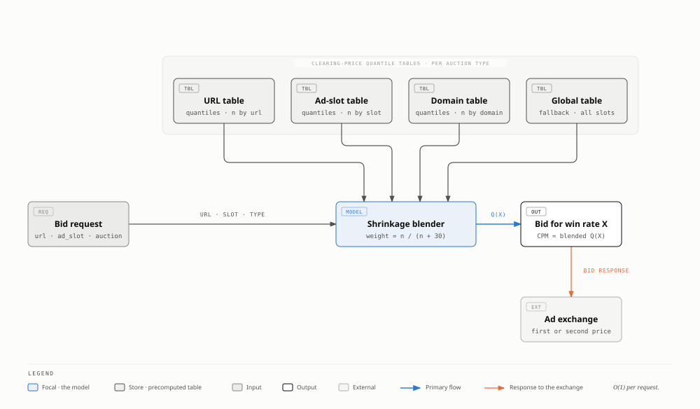
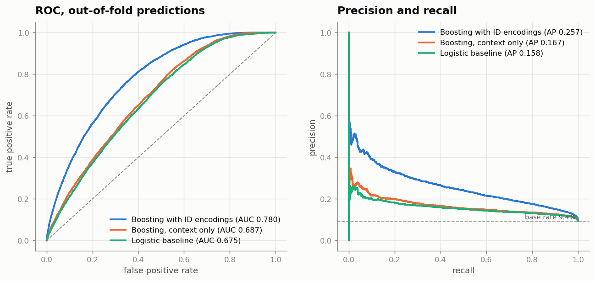
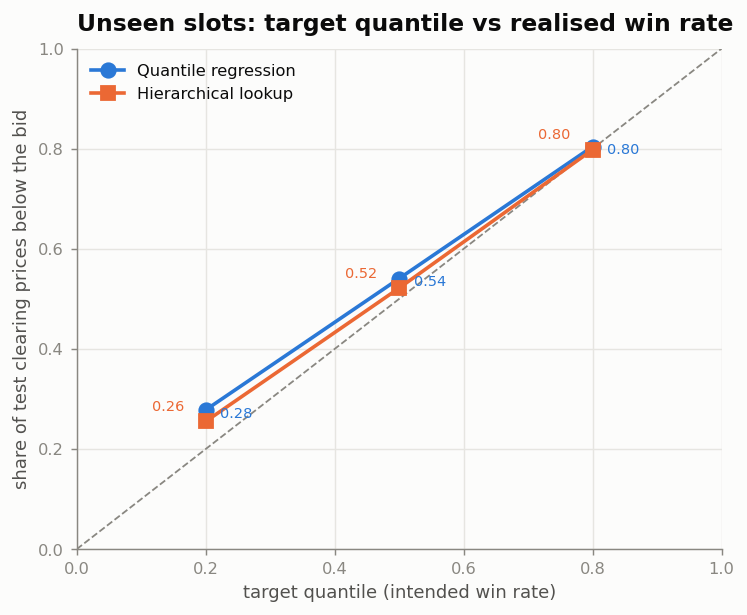
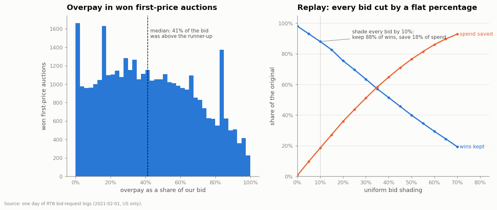
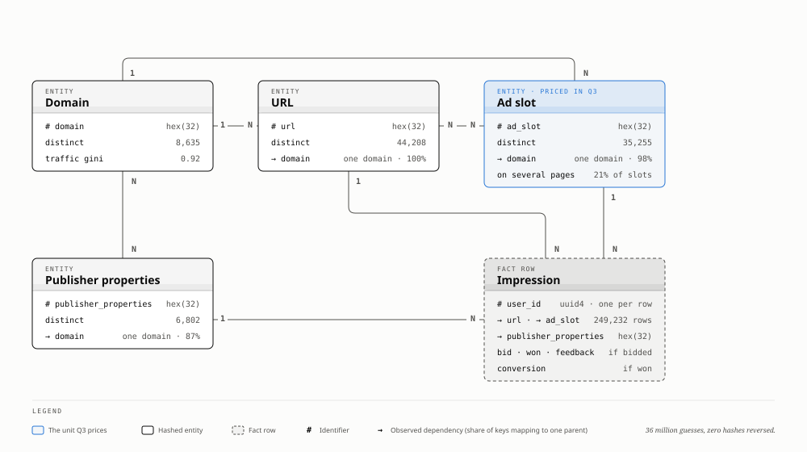
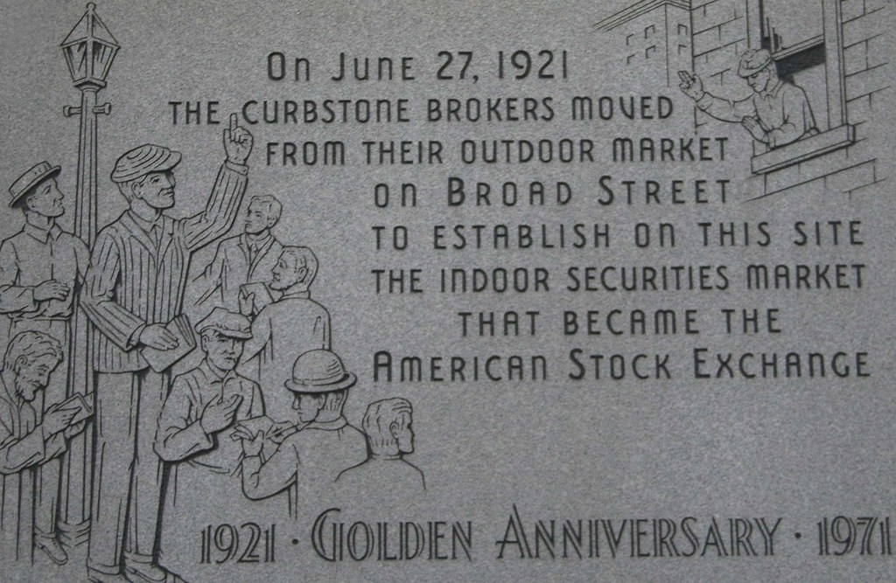

Real-time bidding · one day · 249,232 impressions
One day inside a programmatic ad exchange: what makes a person click, and the exact price it takes to win an ad slot.
Every time a web page loads, the ad slots on it are auctioned in the few milliseconds before the page paints. A demand partner gets a bid request, decides whether to bid and how much, and the highest bid wins the right to show an ad. This report reads one full day of those requests from the demand side and answers three questions a bidder actually has to answer, then keeps going into the parts of the log the brief never asked about.
Question one · the shape of the day
The funnel is steep and it is honest about where attention is lost. Of 249,232 requests we bid on just under half. Of those bids we won about a third. And of the impressions we actually served, roughly one in eleven drew a click. Read left to right, each stage is a filter, and the numbers below are the real counts from the day.
The one number people get wrong here is the click-through rate. Divide 4,368 clicks by all 124,152 bids and you get 3.5%, which looks like the answer and is not. A lost bid never showed an ad, so it could never have drawn a click; its conversion is zero by construction, not by behaviour. Measured where it is actually defined, on the impressions we won and served, the true CTR is 9.4%. Every click number in this report lives on the won subset.
auction type splits everything downstream
The single most important structural fact for pricing is that auction_type divides the log into two regimes that barely resemble each other. First-price auctions are 92% of our bids and genuinely competitive: we win about a third of them at a median bid near 1.4 CPM. Second-price auctions are close to a monopoly, where we win nine times out of ten, but the clearing prices sit an order of magnitude higher. Anything about price that does not hold these two apart is averaging across two different worlds.
Question two · what predicts a click
The brief asks for an analysis, not a model: which fields most deserve a place in a click predictor, argued from the data. Two rules keep the answer usable in production. First, nothing produced by or after the auction is allowed in, because at bid time we do not yet know whether we won or what we paid. Second, everything is measured on served impressions only, for the same reason the funnel showed.
Clicks are rare, so raw correlation is a weak screen. Categorical fields are ranked by information value, the measure credit scoring uses for rare binary outcomes; numeric fields by mutual information, which catches curved relationships a correlation would miss.
Device brand leads, standing in for platform, price tier and how the ad renders. Underneath it, the fields that move CTR most are about engagement and whether the ad was even seen. Both rise cleanly, which is what you want from a feature: a monotone relationship a model can lean on.
The strongest signal in the file is not a column at all. It is the history of the slot itself — and the model section proves it.
The recommended core is device identity, engagement and viewability, plus cheap geographic and auction context. The identifiers (url, domain, ad slot) look useless as raw categories with tens of thousands of levels, but a smoothed historical click rate per slot is the single most valuable input a real bidder can build. The machine-learning section below puts a number on exactly that.
Question three · the price to win
The task is to guess, before bidding, the CPM that wins a given page-and-slot pair some target share of the time. The reframing does the work. To win, our bid has to beat the market's clearing price, so the chance of winning at a bid is simply the fraction of clearing prices below it. That fraction is a cumulative distribution, and inverting it means the bid that wins X% of the time is the X-th quantile of the clearing price for that slot.

The obstacle is data. There are 13,817 page-and-slot pairs and the median one has two observations, far too few for a stable quantile. The fix is to borrow strength: estimate the quantile at the finest level that has enough data, and blend toward the slot, the domain and the whole market as support thins, with a weight of n over n-plus-thirty. Pooling never crosses the auction-type line, because those are the two different worlds from question one.
Does it work? The test bids the model's own price on well-populated pairs and measures how often that bid actually won. If the method is honest, aiming for a 50% win rate should win about half the time. It does.
Beyond the brief · two models
The first model checks question two. A gradient-boosted click classifier reaches an AUC of 0.69 on the context features alone. Add the hashed identifiers as out-of-fold historical click rates and it jumps to 0.78, with average precision rising from 0.17 to 0.26 against a 9.4% base rate. That 0.09 of AUC is the slot history the analysis pointed at, made concrete. Its reliability curve sits on the diagonal, which is what matters when a predicted CTR is used to set a price.

The second model handles the slots the lookup has never seen. Tested on 2,764 page-and-slot pairs held entirely out of training, a quantile regressor lands within a few points of its coverage targets and beats the lookup's pinball loss at every quantile, because it can read the request context where the lookup only has a domain or a global fallback. The recommendation is to keep the exact lookup for slots with history and route new pairs to the regressor.

Beyond the brief · seven more layers
The biggest lever in the whole file is money we did not need to spend. In won first-price auctions the median overpay is 41% above the runner-up, and four wins in ten paid more than double what it took. A flat 10% shave on every bid would have kept 88% of the wins and saved 18% of the spend; with perfect knowledge of the runner-up the ceiling is 47%.

requests, win rate and CTR by hour, UTC
Traffic falls from about 16,000 requests an hour in the US afternoon to 3,200 near 09 UTC, the middle of the American night. Win rate runs opposite to volume, peaking when the auction is quiet, and the median bid climbs into the busy afternoon. The early morning is both easy to win and cheap, which is an argument for time-of-day pacing.
a Lorenz curve of impressions across publishers
Fifty domains out of 8,635 carry half of all impressions, and the top five hundred carry 87%. A Gini of 0.92 is extreme even for web traffic. For the bid model this is good news: the pairs that hold the spend are exactly the ones with enough history to price well, and the long tail is where the pooled fallback earns its keep.
a behavioural read on identity and inventory
Cookie age bends the click rate in a clean shape: brand-new cookies click near average, the day-old ones least, and from there the rate climbs with age to a peak past a year. On the supply side, clustering the domains by how their traffic behaves — device mix, session depth, auction type, price — sorts them into three recognisable types: deep-session desktop publishers, mobile publishers that click well, and a small premium pool of second-price domains where the median bid is 24 CPM.
CTR by US state, on served impressions
The map is the fair way to show state-level rates: states below three hundred served impressions are dropped rather than shown as noise. Maryland and Kentucky lead near 12%, Louisiana trails at 6.5%. Part of the spread is real and part is the device mix wearing a geographic hat, which is why state_code earned only modest strength in question two.
Beyond the brief · the hashed columns
Four columns arrive as 32-character hex strings with an even spread of leading digits, the signature of an MD5-style digest. A careful adversary would try the cheap attacks first, so the analysis did too: hashing the million most popular domains under nine spellings and four digest functions, hashing the integers up to three million once and twice, and hashing each column into the others. Thirty-six million digests, and not a single match. The hashes are salted or keyed, and no domain name comes out of this file honestly.
The structure survives anyway. Because equal inputs still produce equal outputs, the joins between columns are intact, and a functional-dependency matrix recovers the hidden schema without ever reading a name.

A page belongs to exactly one domain. An ad slot is a site-level placement reused across many pages, which is precisely why the pricing model pools by slot before it pools by domain. Publisher properties sit above the domain and behave like a seller or deal identifier. Identity stays hidden, as it should; structure and behaviour are in the clear, and those are what a bidder can actually use.
